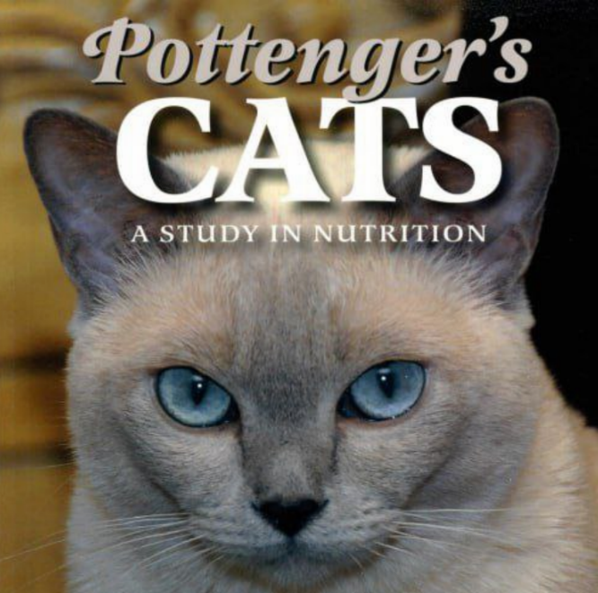
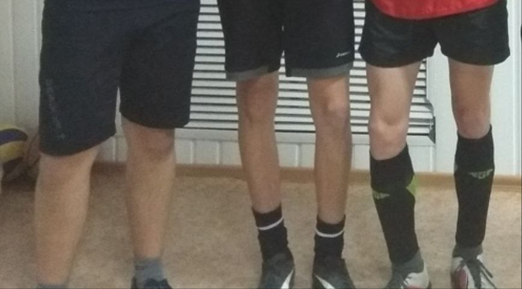

Эксперимент Поттенджера (цитаты из книги).
Пара цитат из книги "Кошки Поттенджера": "Длинные кости кошек в группе питающихся приготовленным мясом имеют тенденцию увеличиваться в длину и уменьшаться в диаметре...",
"...близорукость и дальнозоркость, пониженная активность щитовидной железы или её воспаление, ... воспаление нервной системы с параличом и менингитом обычно встречаются у кошек, которых кормят варёным мясом."
Теперь описание другой группы кошек: "Кошки получающие диету, состоящую на 2/3 из сырого мяса, 1/3 сырого молока и жира печени трески демонстрируют поразительное единообразие в своих размерах и развитии скелета."
Исходя из информации выше, я утверждаю, что физиология моего тела была спрогнозирована более чем за 50 лет до дня моего рождения. Но я не собираюсь плакаться. Я собираюсь реализовать тот потенциал, который мне дан, по максимуму.
Человек не на столько далёк в своей физиологии от кошки, чтобы такая, как в эксперименте Поттенджера, тенденция была маловероятна для него. Это открытие, которое избавит и уже избавляет множество людей на планете от их некоторых проблем, депрессий и несчастий. Почему же в этой области так мало современных исследований? Прочитав книгу Поттенджера, в которой подробнейшим образом описан его эксперимент: условия содержания кошек, выбор продуктов питания, численные статистики, я делаю вывод, что кому то невыгодно проводить исследования в области, представляющей из себя простое решение большинства проблем со здоровьем...
Кому именно это не выгодно - очевидно - корпорациям массового питания, нутрициологам и прочим сущностям, печатающим бумажки на одурачивании общества. В такой погоне за деньгами через тысячу лет численность людей на Земле резко упадёт, останутся единицы - самые сильные и самые близкие к природе.
Если я вас заинтересовал, можете перейти в мой канал, кликнув по иконке, изображенной ниже. Все тексты я сперва публикую там.